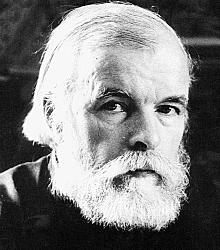

Труды Д.М. Балашова
|  | Дмитрий Михайлович БАЛАШОВ (17.XI.1927, Ленинград - 17.VII.2000, дер. Козынево, Новгородская обл.). Имя Дмитрия Михайловича хорошо известно любителям исторической прозы. Автор ╚Марфы-посадницы╩ и серии романов ╚Государи московские╩ был одним из самых ╚тиражных╩ писателей 80-х годов. Ученик и последователь Л.Н. Гумилева с 70-х годов двадцатого века. |
 "Послесловие"
"Послесловие" - Опубликовано // первой том цикла "Государи Московские" - "Младший сын".
- Л. Н.
Гумилёв Бремя таланта (Вступительная статья к
собранию сочинений Д.М. Балашова) (17/07/01)
- Опубликовано // Балашов Д.М. Собрание сочинений. В 6 т. Т. 1 . Младший сын - М.: Худож. лит., 1991.
- Память.
Две судьбы (5 лет со дня смерти С. Б.
Лаврова и Д. Б. Балашова) (17/07/05).
- Опубликовано // сайт Gumilevica.
- М.
Петров. Он обжигал как пламя (17/11/07).
"Господин Великий Новгород" (1968),
"Марфа-посадница" (1972),
"Младший сын" (1977),
"Великий стол" (1980),
"Бремя власти" (1982),
"Симеон Гордый" (1984),
"Ветер времени" (1988),
"Отречение" (1990)
Святая Русь - роман-эпопея в 8 книгах (в 3-х томах)
том 1 "Степной пролог", "Митрополичий престол", "Куликово поле"
том 2 "Горькое похмелье", "Сергий Радонежский", "Кревская уния"
том 3 "Вечер столетия", "Степной закат"
-
- Беседуют Лев Гумилёв и
Дмитрием Балашовым (1990)
Впервые опубликовано в // Журнал "Согласие", 1990, ╧1, стр. 3-19. (5/03/03)
"Анатомия
антисистем"
- Опубликовано // Наш современник, 1991, No 4. (12/11/01)
- Беседуют Лев Гумилёв и
Дмитрием Балашовым (1990)
-
"Мы
отвыкли от настоящих людей"
- Интервью московской радиостанции "Народное радио" (1998) (17/11/03)
"Через бездну"
- Опубликовано // Завтра , 2000, No 6 (36), 28 марта. (12/02/02)
- "Наших
бьют"
- Опубликовано // Советская Россия, 26 октября 2000 г., ╧ 124 (12019). (18/03/02)
- "Слово
об учителе"
- Опубликовано // Лев Гумилев: Судьба и идеи. - М.Айрис-Пресс, 2003. (17/11/04)
Эта страница была последний раз обновлена 11/16/07